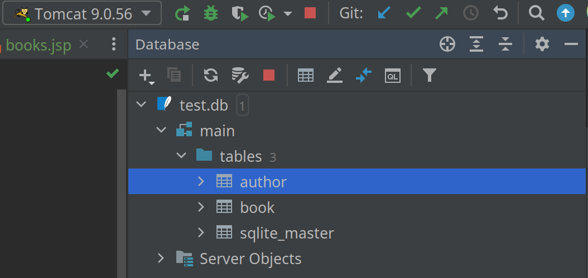
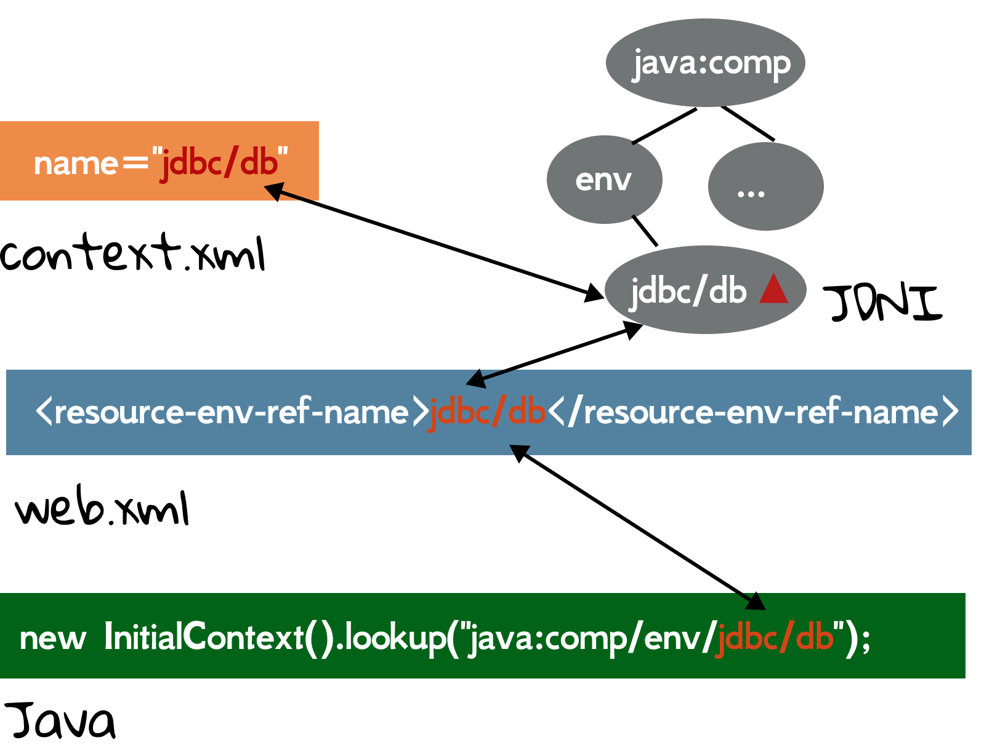

6.4 Accessing Databases From Java (1)
Writing queries in SQL is usually much easier than coding the same queries in a general purpose programming language. However, accessing databases from a general purpose programming language is necessary, because no all queries can be expressed in SQL, and some non-declarative actions cannot be done from within SQL. In this book, we only consider how to access a database using Java.
JDBC
The JDBC[1] standard APIs that Java programs can use to connect to database servers. Like Java EE, JDBC is only a set of specifications, and the specific drivers implement its defined APIs. For example, to connect a MySQL server, we shall use mysql:mysql-connector-java; to connect a PostgreSQL server, we shall use org.postgresql:postgresql. Similarly, to use SQLite[2], we shall use org.xerial:sqlite-jdbc:
implementation 'org.xerial:sqlite-jdbc:3.36.0.3'
To use JDBC, we must import java.sql.* which defines all APIs. So when it comes to coding, the program looks nearly the same no matter which databases you are connecting to. A noticeable difference is the connection URL parameter:
static Connection getConnection(String url) Attempts to establish a connection to the given database URL.
As for SQLite, neither username nor password is required, the url must start with jdbc:sqlite:, and the path of the database file follows. For example, jdbc:sqlite:/home/zhongpu/Desktop/test.db.
SQL statements are executed and results are returned within the context of Connection. As an illustration, let's write a SELECT statement in Java:
String sql = "SELECT * FROM book";
try (PreparedStatement preparedStatement = connection.prepareStatement(sql)) {
try (ResultSet rs = preparedStatement.executeQuery()) {
while (rs.next()) {
System.out.println("title = " + rs.getString("title"));
System.out.println("price = " + rs.getDouble("price"));
}
}
}
It may look a bit complicated. But don't worry, because this is perhaps the most difficult Java code when using SQL.
- Create
PreparedStatementbyConnection, which is used to execute SQL statements. Note we should care about exceptions and resource management[3]. And luckily, the try-with-resources feature can make it simple. executeQuery()is used because it is aSELECTstatement, and it returnsResultSet, representing database result tuples.- As
ResultSetis an iterator, we can usenext()to traversal from the first row to the last row by moving a cursor. Whennext()returns false, it means the cursor is positioned after the last row. getXXX()can retrieve the value of the designated column in the current row of thisResultSet[4].
Note that we prefer PreparedStatement to Statement[5], and its prepareStatement() can accept SQL statements containing parameter values replaced by "?". We can use setXXX() method to specify the values for the parameters[6]. To illustrate, we write an INSERT statement:
String sql = "INSERT INTO author(name, birth, country) VALUES(?, ?, ?)";
try (PreparedStatement preparedStatement = connection.prepareStatement(sql)) {
preparedStatement.setString(1, "Wang Xiaobo");
preparedStatement.setString(2, "1952-05-13");
preparedStatement.setString(3, "China");
preparedStatement.execute();
}
As for an insertion, we don't have to care about the results, so we can use execute() or executeUpdate(). The complete code can be found at ch6/jdbc. By the way, the Java code for DELETE and UPDATE statements is nearly the same, and it is left as an exercise to readers.
Databases and Java web
Using a database in a Java web project still relies on JDBC, so all knowledge you learned above can be applied in a Java EE application. Recall the example in Section 4.2. The key points are:
- The connection URL is stored as an init parameter.
- Read the init parameter, and store a
Connectionin an attribute in context scope. - Process the SQL statements in servlets, and then return the results if necessary.
In AppListener.java, the creation of Connection is nearly the same with the code in Java SE, except loading the driver explicitly by Class.forName(). This method is optional in Java SE since JDBC 4.0, but it is required in Java EE.
String database = sce.getServletContext().getInitParameter("database");
try {
Class.forName("org.sqlite.JDBC");
Connection conn = DriverManager.getConnection("jdbc:sqlite:" + database);
sce.getServletContext().setAttribute("database", conn);
} catch (SQLException | ClassNotFoundException e) {
e.printStackTrace();
}
In this example, we retrieve all books whose price is greater than a given parameter. Readers can find the complete code in ch6/web-database.
String sql = "SELECT title, price FROM book WHERE price > ?";
By the way, IntelliJ IDEA supports adding database for the project, and it will greatly boost the convenience of development.

DataSource[7]
An alternative to the DriverManager facility, a DataSource object is the preferred means of getting a connection. For example, we can easily config pooled connections[8] using DataSource. In previous examples, only a single Connection is used in the whole application, and it can be a bottleneck. Connection pools promote the reuse of connection objects and reduce the number of times that connection objects are created. Connection pools significantly improve performance for database-intensive applications because creating connection objects is costly both in terms of time and resources.
In case we are using Tomcat, we need to configure the DataSource as per its JDNI documentation[9]. The easiest way is to create a META-INF/context.xml in the web content, and fill it with something like:
<Context>
<Resource
name="jdbc/db" type="javax.sql.DataSource"
maxActive="30" maxIdle="10" maxWait="10000"
url="jdbc:sqlite:/home/zhongpu/github/java-ee-swufe/ch6/test.db"
driverClassName="org.sqlite.JDBC"
/>
</Context>
Here, we consider the database as a resource. The complete code can be found at ch6/datasource.Let's discuss the DBCP properties briefly[10]:
- name: A user defined name to identify this resource.
- type: The resource type. In our example, it is
javax.sql.DataSource. - maxActive: The maximum connections being active.
- maxIdle: The maximum connections being idle.
- url, driverClassName: We have used them in the last subsection.
Next, add an entry into DD:
<resource-env-ref>
<resource-env-ref-name>jdbc/db</resource-env-ref-name>
<resource-env-ref-type>javax.sql.DataSource</resource-env-ref-type>
</resource-env-ref>
This roughly means that the web application should use the server-provided DataSource with the name jdbc/db.
Back to the Java code, we can use the JNDI to look up this resource:
DataSource dataSource = (DataSource) new InitialContext().lookup("java:comp/env/jdbc/db");
Connection conn = dataSource.getConnection();
Here, java:comp/env is the node in the JNDI tree where you can find properties for the current Java EE component.

We would wish this resource is singleton, and luckily, it is a default option. It means that no matter how many lookup() is called, it returns the same object. In our example, we still add the DataSource into context's attribute, but it is not required. A good practice is to put DataResource in DBUtil class.
public class DBUtil {
public static DataSource getDataSource() throws NamingException {
return (DataSource) new InitialContext().lookup("java:comp/env/jdbc/db");
}
}
[1] The term JDBC was originally an abbreviation for Java Database Connectivity, but the full form is no longer used.
[2] SQLite is serverless; it is simply a file.
[3] Connection, PreparedStatement, and ResultSet should be closed to avoid computer resources exhausted.
[4] The API offers many getXXX() methods, such as getInt(), getFloat(), and getDate().
[5] In general, PreparedStatement runs faster, and it can avoid SQL injection.
[6] Similar to getXXX(), the API offers many setXXX() methods, such as setInt(), setFloat(), and getDate(), where the first parameter is 1, the second is 2.
[7] This subsection is adapted from https://stackoverflow.com/questions/2299469/.
[8] JDBC Connection Pool is also known as DBCP.
[9] JNDI short for Java Naming and Directory Interface, allows Java software clients to discover and look up data and resources (in the form of Java objects) via a name.
[10] Tomcat's default DBCP relies on Commons DBCP 2 and Commons Pool 2 from Apache. We can also use other alternatives, such as HikariCP, to achieve better performance.